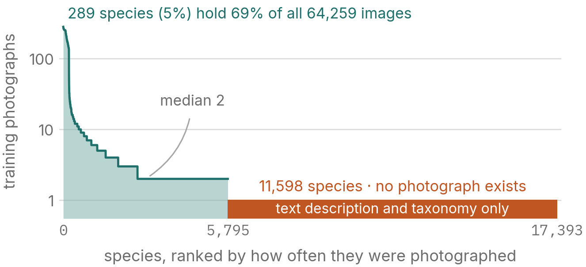
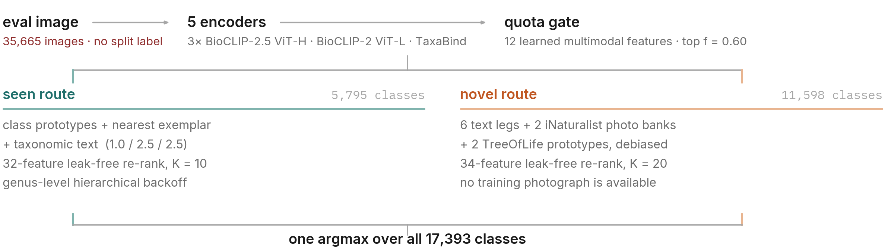
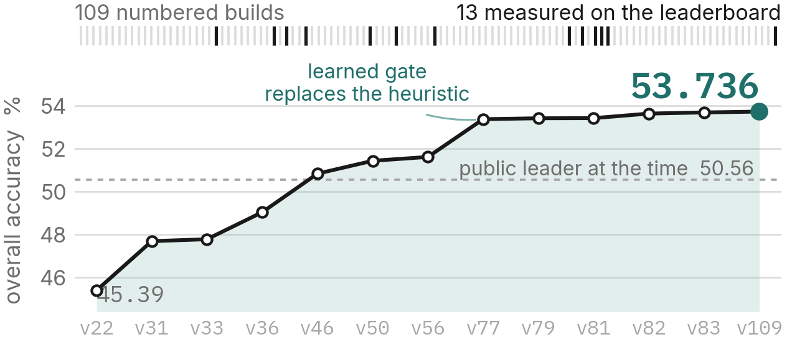

1The problem
Each evaluation image receives one species from a fixed vocabulary of 17,393, scored on plain overall accuracy across 35,665 images. Because 20,097 (56.35%) belong to species seen in training and 15,568 (43.65%) do not, accuracy decomposes exactly as 0.5635·Aseen + 0.4365·Anovel: a point on the novel side is worth 0.77 of a point on the seen side, and an image sent to the wrong side scores zero with certainty. Three difficulties compound.
Fine-grained. Sibling species within a genus share body plan, posture and habitat, separating only on pigment pattern, stripe count and fin morphology. Generic visual features are close to useless here, which is why we build on organismal pre-training and not on a general-purpose vision–language model (§5.4).
Long-tailed. The 64,259 labelled training images spread across 5,795 species at an imbalance ratio of 140:1. Both ends are extreme: 289 species (5%) hold 69% of all images, while the median species has two, 79.4% have five or fewer, and 90.6% ten or fewer. There is almost no per-class signal to fit, so the seen route is built on prototypes and nearest exemplars rather than a learned classifier head.

label_train.json. The teal curve is the
long tail; it bottoms out at two images and stays there for half the photographed species. The clay
bar is the open-set problem: 11,598 species for which no photograph exists at all.Open-set. Two-thirds of the label space is unphotographed. Those species are reachable only through text — the provided descriptions and the taxonomy — or through images of them found outside the competition data. This is not rejection against a background class: every one of them is a scoreable answer, so the system must actively retrieve them.
And a budget. Three submissions per day, thirty in total. The evaluation images are framed differently from the training ones (mean aspect ratio 2.12 against 1.15), and every question about that distribution costs a submission. The offline holdout is the only other instrument we have. Figure 1 is what it turned out to be worth.

2The rules, and how we comply
The competition forbids using the seen/unseen split at inference. splits/test.pkl
and splits/unseen.pkl are protocol-only: a system may not read them to learn whether an
evaluation image is of a photographed species, and may not restrict a prediction to one side of the
split. The seen/novel decision must therefore be made blind, from the image and the class
texts alone, and every error in it is unrecoverable. §6.2 shows this costs about 15.9% of all images
and sets the design's ceiling.
Compliance is checked, not asserted. research/verify_compliance.py ships with
the code, re-runs every claim in Table 1, and exits non-zero on any failure. Its central move is an
inversion. It deliberately reads the split files, which no builder does, in order to prove the
router could not have been an oracle: if we were consulting them, every seen-split image would reach
a photographed class, and ours do so 89.11% of the time. The system makes the same errors a blind
system makes.
| Claim | Machine-checked evidence |
|---|---|
| No split file read at inference | static scan, 6/6 builders in the chain clean |
| One argmax over 17,393 | 21,399 predictions photographed, 14,266 unphotographed |
| Router is blind | 89.11% / 77.58% route purity; an oracle scores 100 / 100 |
| No fish-specific model | 5 general organismal backbones; 2 fish fine-tunes declined |
| External data disclosed | iNat Open Data, TreeOfLife-200M; FishBase unused, declared |
| Gate artefact reproducible | learned_gate_v79.pkl rebuilds bit-identically |
The one gray zone, priced instead of argued. Five points in the pipeline couple across
the evaluation batch: member and gate standardisation, the f-quota rank
cutoff, dbnorm's across-image term, and Sinkhorn on the novel route. The rules forbid
split-based routing and say nothing about batch-coupled inference either way. We did not want to
argue the reading, so we built the strict alternatives and measured them. Freezing the two routing
couplings against holdout-calibrated constants changes 729 of 35,665 predictions (2.04%);
additionally freezing dbnorm's hub term changes 4,213 (11.81%). Both builds ship. Organisers
can pick a strictness level and re-run instead of accepting or rejecting the submission whole, and
the licence grants them that right.
3Setup and encoders
Training data is the provided 64,259 labelled images over 5,795 species, plus
descriptions.json for all 17,393 classes; evaluation is the provided 35,665-image test
set. Everything ran on one NVIDIA L40S (46 GB). Five encoders, all fine-tuned only on the provided
images with shift-matched augmentation (RandomResizedCrop, scale (0.35, 1.0),
ratio (0.5, 2.0)): three BioCLIP-2.5 ViT-H/14 variants (ctftshift,
contrastive LoRA with taxonomic context; ftshift; fullft336shift at
336 px), one BioCLIP-2 ViT-L/14 with a frozen backbone plus a LoRA adapter, and TaxaBind ViT-B/16
as a taxonomic anchor. No fish-specific model or dataset is used. External resources, fully
disclosed: iNaturalist Open Data (117,225 research-grade images over 7,364 species, the
novel route's photo bank) and TreeOfLife-200M embeddings in the BioCLIP-2 prototype legs.
4Implementation
4.1Seen and novel routes
For a candidate among the 5,795 photographed species the score is a weighted sum of mean class
prototype, nearest training exemplar, and taxonomic text similarity, weights
(1.0, 2.5, 2.5). The exemplar term dominates because of the long tail: at a
median of two images per class a class mean is a poor summary, and one well-matched exemplar is the
stronger evidence. For the 11,598 unphotographed species, ten legs are fused under a debiased
normalisation (dbnorm) that removes each leg's per-class score bias: six text legs
(multi-template taxonomy, common names, taxonomic context across four encoders), two iNaturalist
photo-bank legs with 7-crop max-pooling, and two BioCLIP-2 prototype legs merged with
TreeOfLife-200M.
4.2The quota gate
Routing is a ranking problem, not a thresholding problem. All 35,665 queries are scored by a 12-feature logistic model (seen-side maximum similarity, top-1/top-2 margin, log-sum-exp entropy gap, per-encoder maxima, the seen-text-minus-novel-text margin, and photo-bank confidence), and the top f = 0.60 quantile routes to the seen head. A quota is invariant to the scale drift the domain shift induces, and uniform by construction: the rule depends on nothing about an image but its rank.
4.3Leak-free re-ranking, genus backoff
The top K candidates per route (10 seen, 20 novel) are re-ordered by a
logistic re-ranker, 32 features seen-side and 34 novel-side. Every feature is a within-query
statistic (percentile rank, gap-to-maximum, per-leg z-score), so it is invariant to candidate-pool
size. §5.1 explains why that invariance is what separates a real gain from an artefact. The final build adds
one seen-route signal: per candidate, ctftshift prototype and exemplar evidence pooled
across sibling species of the same genus (λG = 3.0). It was
submitted on 1 September, in the last slot before the 22:00 UTC close, changes 312 of 35,665
predictions (0.87%), and leaves the gate bit-identical.
5What the holdout taught us
5.1The leak, and what a proxy point is worth
Our first shortlist re-ranker (v81, submitted 29 August) scored +13.374 on a class-disjoint 5-fold cross-validated pseudo-novel holdout and +0.006 on the leaderboard. The cause was the pool, not the model. Gold labels in that holdout are always drawn from the 1,159 rarest training classes, which are only 9.1% of the 12,757-class candidate pool and which are identifiable from the features. So the re-ranker learned to prefer gold-eligible classes, picking one 53.7% of the time against the fusion's 38.4%, instead of learning to rank evidence. Class-disjoint cross-validation cannot catch this because the leak is in the pool's composition, not in the class partition. It took us one wasted submission to see it.
Per-image decisions such as the gate are safe to train on the holdout. Per-candidate learning (re-rankers, learned fusion weights, calibrators over the class axis) must be trained on a pool in which every candidate is gold-eligible, with pool-size-invariant features. The magnitude of a holdout number is not evidence; the population it was measured on is.
Rebuilding the pool that way (v82) lowered the proxy gain to +8.154 while raising the real gain to +0.213. The seen head gave a consistent exchange rate, and that anchor, 0.026–0.030 real points per leak-free proxy point (the teal band in Figure 1), became a working instrument. A full point needs +34 proxy points, and nothing we had came close. Below about two proxy points the real outcome can flip sign (v84: +0.345 promised, −0.039 paid).
| Re-ranker | Candidate pool | Proxy Δ | Real Δ |
|---|---|---|---|
| v81 novel | leaky, 9.1% eligible | +13.374 | +0.006 |
| v82 novel | leak-free | +8.154 | +0.213 |
| v83 seen | leak-free | +1.803 | +0.053 |
5.2New evidence compounds, re-weighting refunds
The gate produced the project's largest single gain. It is the one teal point in Figure 1, the only change that paid more than it promised. Decomposing it twice gave us the most useful rule we found. A gate change moves overall accuracy through two channels: the routing term (how many images reach a route that can contain their label) and the conditional term (how accurate each route is on what it receives).
| Change to the gate | Routing | Cond. | Real Δ |
|---|---|---|---|
| v56→v77 2 features → 12 new information |
+1.082 | +0.686 | +1.767 |
| v77→v79 same 12, C = 1 → 100 re-weighted only |
+0.481 | −0.439 | +0.042 |
New features change which images sit near the boundary, and since they also predict whether the receiving head will be correct, both terms rise together. Re-weighting the same features only slides marginal images across a fixed ordering: routing improves, the conditional term falls almost as much, and 90% of the gain is refunded. We thereafter projected every gate proposal at 0.1× its routing delta and stopped tuning. The genus backoff was accepted on the same logic (sibling similarity is absent from the base fusion) and also transferred, which makes the rule 2 for 2.
5.3The operating point, where the holdout is anti-correlated
The quota f trades the routes at roughly 4:1. The holdout preferred f = 0.72 by five points, and the leaderboard docked 0.60 for it. That is the red point at the bottom of Figure 1. Three real submissions then bracketed the axis and the response is concave, so f = 0.60 is a measured optimum: 53.520 / 53.697 / 53.492 at f = 0.55 / 0.60 / 0.65. The holdout was not consulted on this axis again.
5.4Encoder choice, and what we closed
Roughly 25 backbones were screened on the novel route. Organismal pre-training dominates: BioCLIP 21.53% where SigLIP2 reached 5.13% and BioTrove ≈0%. No encoder-side lever survived after v56, and every later real gain came from evidence the pipeline already computed. The following are closed and need not be re-run: re-ranker model class is inert (gradient boosting vs logistic on clean pools: −0.008 novel, +0.003 seen); gate recalibration is exhausted (six levers, AUC pinned at 0.981); transduction gives little (Sinkhorn +0.09 at v33, negative later); multi-crop TTA changed 0.6% of predictions; recover-on-eject promised +3.51 and paid −0.07.
6Results
6.1The campaign
Every number below is a real leaderboard score, not a holdout estimate. The system went from 45.39% to 53.736% over 109 numbered builds; the novel route carried almost all of it, 8.51% to 22.91%, while seen accuracy stayed inside a two-point band.

| Build | Seen | Novel | Overall | What changed |
|---|---|---|---|---|
| v22 | — | — | 45.390 | closed-set shift-robust ensemble |
| v33 | 78.20 | 8.51 | 47.780 | single-pipeline routing baseline |
| v56 | 75.67 | 20.57 | 51.616 | 7-crop max-pool, 336 px bank |
| v77 | 77.72 | 21.96 | 53.383 | learned 12-feature gate |
| v82 | 77.45 | 22.91 | 53.644 | leak-free novel re-ranker |
| v83 | 77.54 | 22.91 | 53.697 | + leak-free seen re-ranker |
| v109 | 77.61 | 22.91 | 53.736 | + genus-level backoff |
6.2Where the remaining error is
The gate separates the two populations almost perfectly on held-out data (AUC 0.981) but only at 0.911 on evaluation, because the framing shift moves the statistics of the crops it reads. At the deployed operating point it mis-routes 15.9% of images, each then choosing from a candidate set that cannot contain its label. Correcting only the routing would reach 54.35%, this design's ceiling. Reaching 55% needs +1.30 from the recognisers themselves, while re-ranking headroom is bounded at ~0.65 by the anchor of §5.1. The gap needs a stronger recogniser, not a better decision rule.
7Three rules for thirty measurements
This benchmark forces fine-grained, long-tailed and open-set recognition at once, under a rule that denies the system any knowledge of which regime an image is in, and under a budget that makes the offline proxy the main instrument. The proxy lied to us more often than not. What we would carry to the next such problem is not the architecture but three rules for reading evidence when you get thirty real measurements.
- Measure the population, not the number. A holdout gain is only evidence if every candidate in the pool could have been the answer. Class-disjoint cross-validation does not check this. Ours said +13.374 and the leaderboard said +0.006.
- New information compounds; re-weighting refunds. Before spending a submission on a change to a decision rule, ask whether it reads evidence the rule has never seen. If not, project it at a tenth of its holdout delta.
- When a rule is ambiguous, price the strict reading and ship it. Building the per-image variant cost us nothing on the leaderboard and turned an argument into a number, 729 predictions. The decision then belongs to the organisers, which is where it should be.
REFERENCES [1] Stevens et al. BioCLIP. CVPR 2024. [2] Gu et al. BioCLIP 2 / TreeOfLife-200M. 2025. [3] Sastry et al. TaxaBind. WACV 2025. [4] Radford et al. CLIP. ICML 2021. [5] Tschannen et al. SigLIP 2. 2025. [6] Hu et al. LoRA. ICLR 2022. [7] Cuturi. Sinkhorn Distances. NeurIPS 2013. [8] iNaturalist Open Data, 2026.